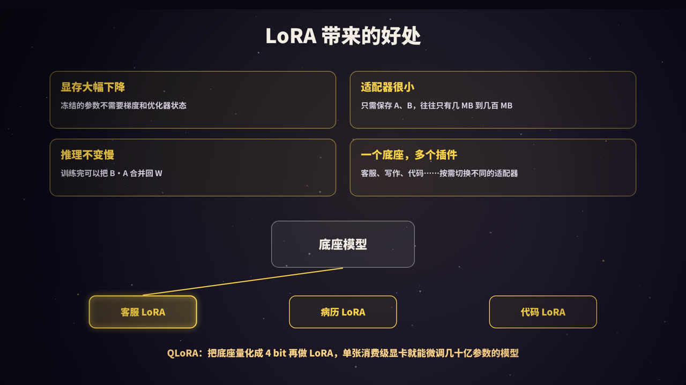
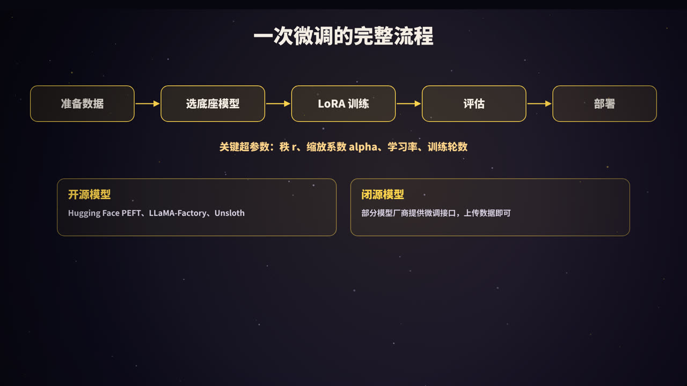

微调是什么
大模型在预训练阶段读了海量文本，什么都会一点。但在具体业务里，我们常常希望它：
- 严格按照固定的格式输出，比如医院的病历、公司的工单；
- 用某种固定的语气说话，比如你们公司客服的风格；
- 在某个具体任务上表现得又稳又准，比如从合同里抽取字段、给工单分类。
靠提示词也能做到一部分，但规则一多，提示词越写越长，效果依然时好时坏，而且每次请求都要为这些长提示词付费。
微调（fine-tuning）就是：拿一个已经训练好的模型，用你自己准备的数据再训练一下，让它把这些要求「学进参数里」。微调之后，不需要长长的提示词，模型也能稳定地按你想要的方式工作。
先问：真的需要微调吗？
微调有成本：要准备数据、要算力、要评估、要维护。实践中，一般按照下面的顺序考虑：
- 提示词：最快、最便宜。先把提示词认真优化一遍，配合少量示例（见本系列《提示词工程》）；
- RAG：如果问题是模型缺少知识，比如公司内部文档、最新的产品信息，就用检索增强生成，把资料查出来交给模型（见本系列《RAG》）；
- 微调：如果问题是要改变模型的行为习惯，比如格式、风格、某类任务的做法，再考虑微调。
| 适合微调 | 不适合微调 | |
|---|---|---|
| 目标 | 固定的输出格式、写作风格、语气 | 注入经常变化的知识（用 RAG） |
| 任务 | 分类、抽取等要求稳定的任务 | 提示词还没认真优化过 |
| 成本 | 用小模型学会大模型在某个任务上的能力，降低调用成本 | 数据很少、质量很差 |
| 提示词 | 规则太长，想把规则「训练进去」 | 需要随时修改规则 |
一句话概括：RAG 让模型「知道」，微调让模型「学会」。两者也可以结合使用：先微调让模型学会按格式回答，再用 RAG 提供最新的资料。
微调能不能用来给模型「灌知识」？可以有一些效果，但不推荐作为主要手段：知识一更新就要重新训练，模型也可能把知识记得不准，甚至编造出看起来很像的内容。需要准确、可更新、能溯源的知识，优先用 RAG。
全量微调：最直接，但很贵
最直接的方式是全量微调（full fine-tuning）：用你的数据继续训练，模型的所有参数都参与更新。
显存账
以 70 亿参数（7B）的模型为例，按常见的「混合精度 + Adam 优化器」训练，每个参数大约需要 16 字节：
| 内容 | 每个参数 | 7B 模型 |
|---|---|---|
| 模型参数（16 位） | 2 字节 | 14 GB |
| 梯度（16 位） | 2 字节 | 14 GB |
| 32 位主权重副本 | 4 字节 | 28 GB |
| Adam 一阶动量 | 4 字节 | 28 GB |
| Adam 二阶动量 | 4 字节 | 28 GB |
| 合计 | 16 字节 | 约 112 GB |
这还没算训练时的激活值（每一层的中间结果，用于反向传播），它随批大小和序列长度增长。所以全量微调一个 7B 模型，通常需要多张高端显卡；模型更大，成本更高。各种显存优化技术（如 ZeRO、梯度检查点）可以降低需求，但无法改变「所有参数都要训练」的本质。
另外两个问题
- 存储：每个任务都要保存一整份完整的模型。10 个任务，就是 10 份 14 GB；
- 遗忘：训练数据较少、训练过头时，模型容易丢掉原有的通用能力，这叫灾难性遗忘（catastrophic forgetting）。
于是自然会想：能不能只改一小部分参数？这类方法统称为参数高效微调（PEFT，Parameter-Efficient Fine-Tuning），其中最流行的就是 LoRA。
LoRA 的原理
LoRA 全称 Low-Rank Adaptation（低秩适配），2021 年由微软的研究人员提出。
核心想法
模型里有大量的大矩阵，比如注意力层中的 W_Q、W_V（见本系列《Transformer 详解》）。微调本质上是给这些矩阵加上一个改动量 ΔW：
W′ = W + ΔW
全量微调直接训练整个 ΔW，它和 W 一样大，比如 4096 × 4096。
LoRA 的做法是：
- 冻结原始权重 W，不再更新；
- 不直接学 ΔW，而是用两个「瘦长」的矩阵相乘来表示它：ΔW = B · A；
- B 的形状是 4096 × r，A 的形状是 r × 4096，r 是一个很小的数，叫做秩（rank），常用 4～64；
- 训练时，只更新 A 和 B。
参数量算一算
以一个 4096 × 4096 的矩阵、r = 8 为例：
| 计算 | 参数量 | |
|---|---|---|
| 原矩阵 W | 4096 × 4096 | 约 1678 万 |
| LoRA（A + B） | 4096 × 8 + 8 × 4096 | 约 6.6 万 |
| 比例 | 约 0.4% |
LoRA 论文中报告：在 1750 亿参数的 GPT-3 上，与全量微调相比，可训练参数减少约 1 万倍，训练所需显存减少约 3 倍，而效果相当。
为什么低秩就够了
「秩」可以粗略理解为一个矩阵中真正独立的「方向」有多少个。一个 4096 × 4096 的矩阵最多可以有 4096 个独立方向，而 B · A 最多只有 r 个。
LoRA 的假设是：微调时需要的改动，本身就是「低秩」的。预训练模型已经掌握了大量通用能力，适配一个具体任务，只需要在少数几个方向上做调整。此前也有研究发现，预训练模型的「内在维度」很低：只在一个很小的子空间里优化，就能达到接近全量微调的效果。
几个细节
- 初始化：A 随机初始化，B 初始化为 0。这样训练刚开始时 B · A = 0，模型和原来完全一样，训练从原模型平稳出发；
- 缩放系数 alpha：旁路的输出会乘以
alpha / r。调整 r 时，可以不用大幅重新调学习率。常见设置是 alpha 等于 r 或 2r； - 加在哪些层：原论文主要加在注意力的 W_Q 和 W_V 上；现在常见的做法是加在注意力和前馈网络的所有线性层上，效果通常更好；
- 合并：训练完成后，可以直接计算 W′ = W + (alpha / r) · B · A，把它合并回原矩阵。合并后模型结构和原来完全一样，推理不会变慢。
动手：用 NumPy 训练一个 LoRA
下面这段代码模拟了 LoRA 的训练过程：有一个冻结的「预训练」权重 W0，新任务需要在它的基础上做一个低秩的改动。我们只训练 A 和 B，看它能不能学会这个改动。
import numpy as np
rng = np.random.default_rng(0)
d, r, n = 256, 4, 2000 # 维度、LoRA 的秩、样本数
alpha = 8 # 缩放系数，实际缩放为 alpha / r
s = alpha / r
W0 = rng.normal(size=(d, d)) / np.sqrt(d) # 「预训练好」的权重，冻结
delta = rng.normal(size=(d, 2)) @ rng.normal(size=(2, d)) * 0.02 # 新任务需要的改动（低秩）
X = rng.normal(size=(n, d))
Y = X @ (W0 + delta).T # 新任务的「标准答案」
A = rng.normal(size=(r, d)) * 0.01 # A 随机初始化
B = np.zeros((d, r)) # B 初始化为 0：训练开始时 B·A = 0，模型和原来完全一样
def forward(X):
return X @ W0.T + s * (X @ A.T) @ B.T # h = W0·x + (alpha/r)·B·A·x
# 一个极简的 Adam 优化器
m = {k: 0 for k in "AB"}; v = {k: 0 for k in "AB"}
lr, b1, b2 = 0.01, 0.9, 0.999
for step in range(1, 301):
H = X @ A.T # (n, r)
err = forward(X) - Y # (n, d)
loss = (err ** 2).sum(axis=1).mean()
g = 2 * err / n # d loss / d 输出
grads = {"B": s * g.T @ H, # 只对 A、B 求梯度，W0 始终不动
"A": s * (g @ B).T @ X}
for k, P in (("A", A), ("B", B)):
m[k] = b1 * m[k] + (1 - b1) * grads[k]
v[k] = b2 * v[k] + (1 - b2) * grads[k] ** 2
P -= lr * (m[k] / (1 - b1 ** step)) / (np.sqrt(v[k] / (1 - b2 ** step)) + 1e-8)
if step in (1, 50, 100, 300):
print(f"step {step:4d} loss {loss:.4f}")
print("原矩阵参数量:", W0.size)
print("LoRA 参数量: ", A.size + B.size, f"({(A.size + B.size) / W0.size:.1%})")
W_merged = W0 + s * B @ A # 训练完合并回去，推理不增加计算
print("合并前后输出一致:", np.allclose(X @ W_merged.T, forward(X)))
运行结果：
step 1 loss 48.0525
step 50 loss 0.1517
step 100 loss 0.0016
step 300 loss 0.0000
原矩阵参数量: 65536
LoRA 参数量: 2048 (3.1%)
合并前后输出一致: True
只训练 3.1% 的参数，就完全学会了这个低秩的改动；合并回原矩阵后，输出与带旁路时完全一致。（这个小例子维度只有 256，所以比例是 3.1%；维度是 4096 时，同样的秩占比会小得多。）
真实的大模型训练中，用的是 PyTorch 和 Hugging Face 的 PEFT 库，原理完全相同。下面是参考写法（需要安装 transformers 和 peft，模型名换成你要用的）：
from transformers import AutoModelForCausalLM
from peft import LoraConfig, get_peft_model
model = AutoModelForCausalLM.from_pretrained("你的底座模型")
config = LoraConfig(
r=16, # 秩
lora_alpha=32, # 缩放系数
lora_dropout=0.05,
target_modules=["q_proj", "k_proj", "v_proj", "o_proj"], # 加在哪些层，名称因模型而异
task_type="CAUSAL_LM",
)
model = get_peft_model(model, config)
model.print_trainable_parameters() # 打印可训练参数量和占比
# 之后用常规的训练流程训练，保存时只会保存 LoRA 的 A、B 两组矩阵
LoRA 带来的好处

| 好处 | 原因 |
|---|---|
| 显存大幅下降 | 冻结的参数不需要梯度，也不需要优化器状态，前面那 98 GB 的大头几乎都省掉了 |
| 适配器很小 | 只需保存 A、B，往往只有几 MB 到几百 MB，而不是一整份模型 |
| 推理不变慢 | 训练完可以把 B · A 合并回 W |
| 一个底座，多个插件 | 同一个底座模型，可以按需挂载客服、病历、代码等不同的 LoRA 适配器，随时切换 |
| 遗忘较少 | 原始权重保持不变，研究发现 LoRA 比全量微调更少遗忘原有能力（相应地，在差异很大的新领域上学到的也可能少一些） |
「一个底座，多个插件」在部署上很实用：不合并权重，在推理服务中同时加载一个底座模型和很多个 LoRA 适配器，不同请求使用不同的适配器。vLLM 等推理框架都支持这种多 LoRA 服务。
QLoRA：单卡也能微调
QLoRA（2023 年）在 LoRA 的基础上更进一步：
- 把冻结的底座模型量化成 4 bit 存储（一种叫 NF4 的格式），显存占用约为 16 位的四分之一；
- 计算时再临时还原成 16 位，LoRA 的 A、B 仍然用 16 位训练；
- 配合双重量化、分页优化器等技巧，进一步节省显存。
论文中，QLoRA 在单张 48 GB 显卡上微调了 650 亿参数的模型。对于几十亿参数的模型，一张消费级显卡就够了。
其他参数高效微调方法
| 方法 | 做法 |
|---|---|
| Adapter | 在每层中插入小的神经网络模块（比 LoRA 更早，但会增加推理延迟） |
| Prefix / Prompt Tuning | 只训练加在输入前面的一组「虚拟 token」向量 |
| DoRA 等 LoRA 变体 | 把权重分解为方向和大小分别调整，或改进初始化、秩的分配 |
目前实践中最常用的还是 LoRA 和 QLoRA。
真正决定效果的：数据
微调的效果，很大程度上取决于数据。对话模型的微调数据通常是 JSONL 格式，每行一条完整的对话：
{"messages": [
{"role": "system", "content": "你是某某公司的客服"},
{"role": "user", "content": "快递三天没动了"},
{"role": "assistant", "content": "非常抱歉让您久等！我马上帮您联系物流，今天之内给您回复。"}
]}
assistant 的回答就是你希望模型学会的样子。训练时，通常只在 assistant 部分计算损失，模型学习「在这样的上下文下，应该这样回答」。
数据的几条原则
- 质量远比数量重要：几百到几千条精心准备的样本，常常好过几万条粗糙的数据。研究也表明，少量高质量数据就能显著改变模型的行为风格；
- 风格要统一：如果数据中的回答风格各异，模型就会学得摇摆不定；
- 覆盖真实场景：数据要尽量接近线上真实的用户输入，包括各种边界情况、需要拒绝回答的情况；
- 模型会学到数据里的一切：包括数据中的错误、偏见和不好的习惯。错别字、错误的格式、编造的事实，都会被学进去；
- 留出评估集：从数据中单独留出一部分，不参与训练，用来评估效果；
- 防止遗忘：如果担心模型丢掉通用能力，可以在训练数据中混入一部分通用数据。
数据从哪里来？常见的来源有：历史上人工处理的真实记录（注意脱敏）、人工编写、用更强的模型生成后再由人审核。用大模型的输出来训练小模型，叫做蒸馏，是降低成本的常用手段（要注意遵守相关模型的使用条款）。
一次微调的完整流程

- 明确目标与评估方法：先想清楚「好」的标准是什么，并准备好评估集和评估方式（见本系列《Evals》）。先用提示词跑一遍，作为基线；
- 准备数据：收集、清洗、统一格式，划分训练集和评估集；
- 选底座模型：一般选择合适大小的指令微调版（Instruct / Chat）模型作为起点；
- LoRA 训练：设置超参数，开始训练，观察训练集和评估集的损失曲线；
- 评估：用评估集对比微调前后的效果，同时检查通用能力有没有明显下降；
- 部署：合并权重后部署，或者以适配器的形式挂载到推理服务上。
关键超参数
| 超参数 | 常见取值 | 说明 |
|---|---|---|
| 秩 r | 8～64 | 越大表达能力越强，参数也越多。任务简单时，小的 r 就够 |
| alpha | r 或 2r | 控制 LoRA 旁路的影响程度 |
| 学习率 | 约 1e-4～2e-4 | 通常比全量微调的学习率高 |
| 训练轮数 | 1～3 轮 | 轮数过多容易过拟合：训练损失还在下降，评估集效果却变差 |
| 目标层 | 注意力层，或所有线性层 | 加的层越多，效果通常越好，参数也越多 |
这些只是起点，具体还要根据评估结果调整。
常用工具
- 开源模型：Hugging Face 的 PEFT 和 TRL 库、LLaMA-Factory、Unsloth 等，后两者把数据处理、训练、合并、导出都封装好了，配置一下就能开始；
- 闭源模型：部分模型厂商提供微调服务，上传数据即可训练，不需要自己管理 GPU，但能调整的选项较少。
微调在大模型训练中的位置
一个对话大模型通常经历这几个阶段：
- 预训练：在海量文本上学习「猜下一个词」，获得基础的语言能力和知识；
- 监督微调（SFT）：用大量「指令-回答」数据训练，让模型学会听指令、按对话的方式回答；
- 偏好对齐：用人类的偏好数据（RLHF、DPO 等方法），让模型的回答更有用、更安全。
本文讲的业务微调，大多属于在第 2 步的基础上再做一次 SFT，只是数据换成了你自己的。预训练、SFT 与 RLHF 的细节，会在本系列后续内容中介绍。
常见问题
Q：微调之后，还需要写提示词吗？ 需要，但可以短很多。训练时用的系统提示词，推理时最好保持一致。
Q：微调能让小模型赶上大模型吗？ 在某个具体任务上，经过微调的小模型常常能接近甚至超过未经微调的大模型，而且成本低、速度快。但在通用能力上，小模型仍然比不上大模型。
Q：LoRA 的效果比全量微调差吗？ 在大多数常见任务上，二者效果相近。在与原模型差异很大的任务上（比如大量代码、数学的持续训练），全量微调可能学得更多。
Q：需要多少数据？ 改变格式、风格这类任务，几百条高质量数据就可能见效；复杂任务需要更多。建议从小规模开始，看评估结果再决定是否扩充。
总结
- 先提示词，再 RAG，最后才考虑微调。RAG 让模型「知道」，微调让模型「学会」；
- 全量微调要更新所有参数，7B 模型就需要约 112 GB 显存，还要为每个任务保存完整模型；
- LoRA 冻结原权重 W，只训练两个小矩阵 B · A，参数量往往不到原来的 1%；训练后可以合并回去，推理不变慢；
- QLoRA 把底座量化到 4 bit，单卡也能微调；
- 数据为王：质量大于数量，风格统一，留出评估集，警惕遗忘。
参考资料
- Hu, E. J., et al. (2021). LoRA: Low-Rank Adaptation of Large Language Models. arXiv:2106.09685.
- Dettmers, T., et al. (2023). QLoRA: Efficient Finetuning of Quantized LLMs. NeurIPS.
- Aghajanyan, A., et al. (2021). Intrinsic Dimensionality Explains the Effectiveness of Language Model Fine-Tuning. ACL.
- Houlsby, N., et al. (2019). Parameter-Efficient Transfer Learning for NLP. ICML.
- Liu, S.-Y., et al. (2024). DoRA: Weight-Decomposed Low-Rank Adaptation. ICML.
- Biderman, D., et al. (2024). LoRA Learns Less and Forgets Less. TMLR.
- Zhou, C., et al. (2023). LIMA: Less Is More for Alignment. NeurIPS.
- Rajbhandari, S., et al. (2020). ZeRO: Memory Optimizations Toward Training Trillion Parameter Models. SC20.
- Hugging Face PEFT 文档.